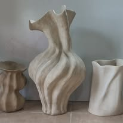
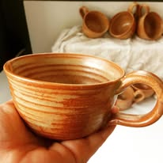
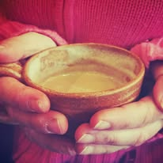
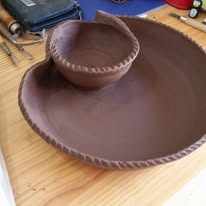

יצירה מקומית הנובעת מן האדמה, עוברת דרך הידיים ומוצאת את מקומה בבית שלכם.
הקדרות עבורי היא לא רק יצירת כלים, אלא דרך חיים של התבוננות והקשבה. בסטודיו שלי בתקוע, אני מזמינה את הגולמיות של האדמה אל תוך התהליך היצירתי.
כל כלי שיוצא מתחת ידיי הוא סיפור של זמן וסבלנות. תנועת האובניים, המגע הישיר עם החימר והשריפה בתנור – כולם מתגבשים לכדי פריט ייחודי שיש בו נשמה.


כלים אינטימיים לרגעים של שקט.

פונקציונליות עם נוכחות אמנותית.

סטים שנוצרו בטכניקות מסורתיות.
"הספלים של בתיה הם הדבר הראשון שאני מחזיקה בכל בוקר. יש בהם חמימות ודיוק שפשוט לא מוצאים במקומות אחרים."
"הסדנה בסטודיו הייתה חוויה של שקט מוחלט מול הנוף המדהים של תקוע. יצאתי עם כלים ועם הרבה כוח."
מוזמנים לחוות את הקסם של היצירה בחומר בלב המדבר.
לתיאום מפגש יצירה